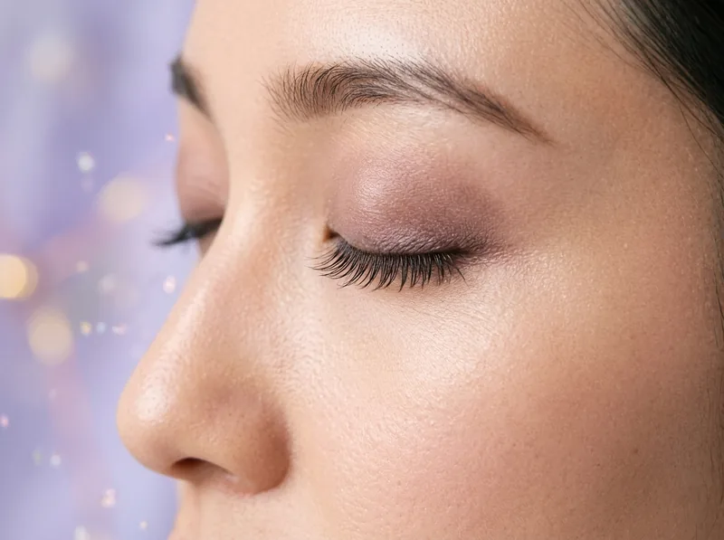
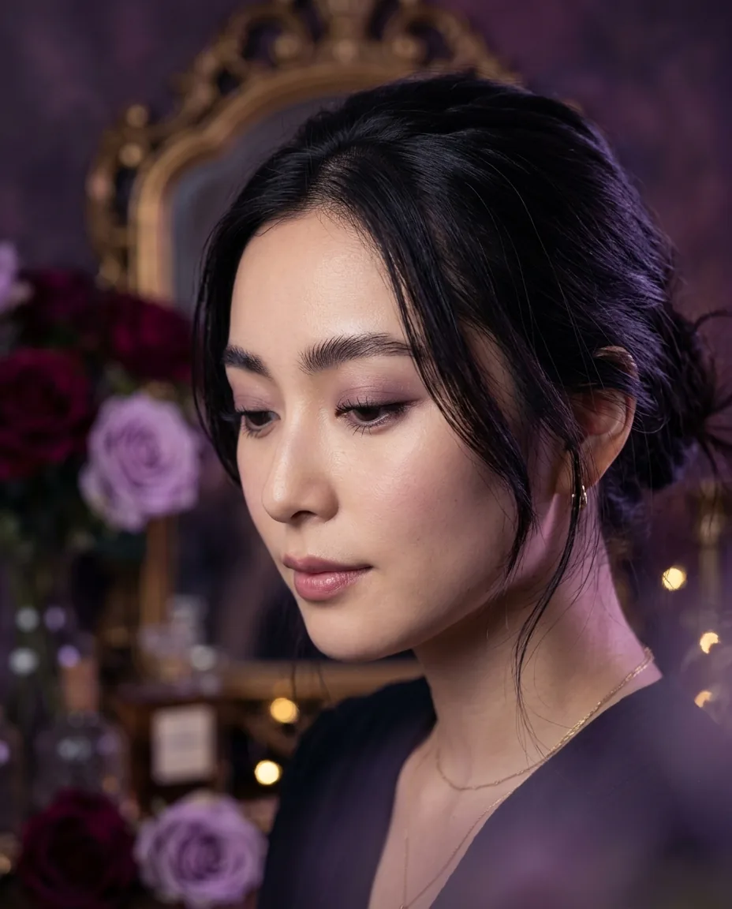
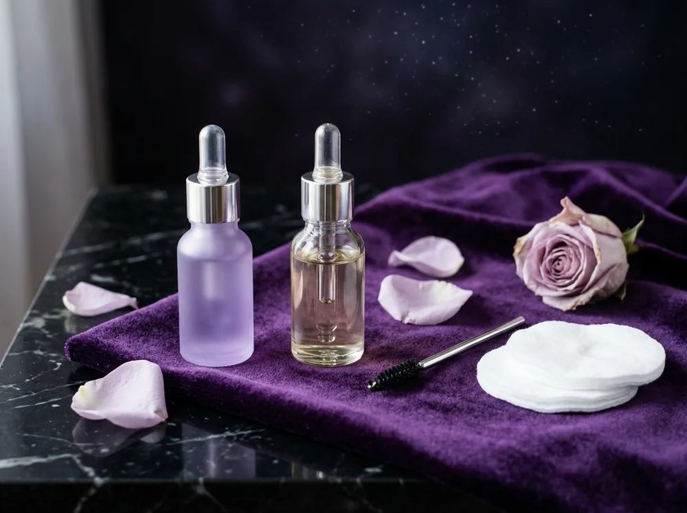
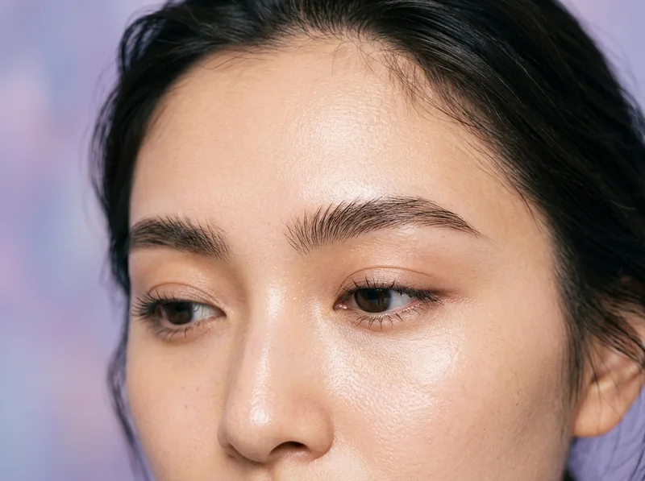
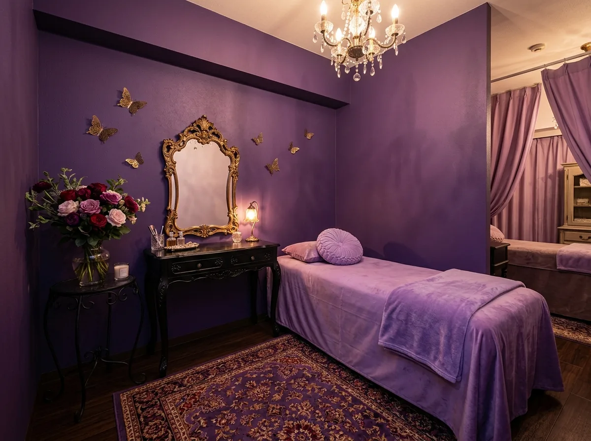

01
まつ毛に合わせて、
薬剤と時間を調整
まつ毛の太さ・長さ・これまでの施術歴に合わせて、薬剤の種類や置く時間を一人ひとり調整します。根元からふんわり立ち上がる、自然なカールに仕上げます。

まつ毛パーマ・眉毛パーマ｜自由が丘
施術のたびに、まつ育トリートメントを。
きれいになりながら、
まつ毛のコンディションも整えていく。
夜空色のドレッサールームで、
あなただけの時間を。
初回限定まつ毛パーマ（まつ育トリートメント込）
¥6,600¥4,950（税込）
※画像はイメージです。
仕上がり・持ちには個人差があります。
毎回のまつ育
トリートメント込み
美容師免許を
持つスタッフが担当
全3席・
完全予約制
Trouble
Milky Wayは、
「きれいになること」と
「まつ毛をいたわること」を、
どちらもあきらめないサロンです。
Lash Care

まつ育とは、まつ毛をいたわりながら、健やかな状態に整えていくケアのこと。
Milky Wayでは、まつ毛パーマ・眉毛パーマのたびに、施術の前後でトリートメントを行います。薬剤の負担に配慮しながら仕上げ、次のご来店までの過ごし方もお伝えします。
一度きりではなく、通うたびにまつ毛の状態を見ながら続けていく。それが、私たちの考える「まつ育しながら、きれいに」です。
Before
まつ毛の太さや長さ、これまでの施術歴をうかがい、まつ毛の状態を確認します。
Treatment
パーマの前後にトリートメントを。まつ毛を保護しながら、カールを整えます。
Home care
まつ毛を健やかに保つ洗い方や、メイク落としのコツをお伝えします。
※まつ育は、まつ毛をいたわりながら整えるケアのことで、
まつ毛の成長や発毛を促すものではありません。
Reason

01
まつ毛の太さ・長さ・これまでの施術歴に合わせて、薬剤の種類や置く時間を一人ひとり調整します。根元からふんわり立ち上がる、自然なカールに仕上げます。

02
下向きに生えた眉毛や、ばらばらな毛流れを整えて、ふんわりとした眉に。眉カットとワックスで形も整えるので、描き足すのは少しだけで済みます。
03
アンティークの鏡やバラに囲まれた、全3席のプライベートサロン。完全予約制なので、ほかのお客様を気にせず、ゆっくり過ごしていただけます。

Salon
扉を開けると、深いパープルの壁に、アンティークの鏡とバラ。小さな灯りが天の川のようにきらめく、少しだけ秘密めいた空間です。
ベッドは、やわらかなベルベット。施術のあいだは目を閉じて、ゆっくりお休みください。
Flow
LINE・WEB・お電話から。LINEなら24時間受け付けています。
まつ毛と眉の状態を確認し、仕上がりのイメージをすり合わせます。
まつ育トリートメントを含めて約60分（セットは約100分）。目を閉じてお過ごしください。
カールを長持ちさせる過ごし方と、ご自宅でのケアをお伝えします。
Notice
FAQ
1〜1.5か月が目安です。まつ毛は自然に生え変わるため、持ちには個人差があります。
まつエクは人工の毛を付け足すメニュー、まつ毛パーマはご自身のまつ毛にカールをつけるメニューです。付け足さないので、ナチュラルな仕上がりになります。
多くの場合はできます。カウンセリングでまつ毛の長さを確認し、カールをつける道具の太さを調整します。極端に短い場合は、お受けできないこともあります。
眉毛が下向きに生えている方、毛流れがばらばらな方、左右の形の違いが気になる方におすすめです。
施術後24時間は、目元を濡らしたりこすったりしないようにお願いします。そのほかの過ごし方は、施術のあとにご案内します。
Access
初回限定 まつ毛パーマ
（まつ育トリートメント込）¥6,600 → ¥4,950（税込）
お電話でのご予約：03-0000-0000
（受付 10:00〜19:00／水曜定休）